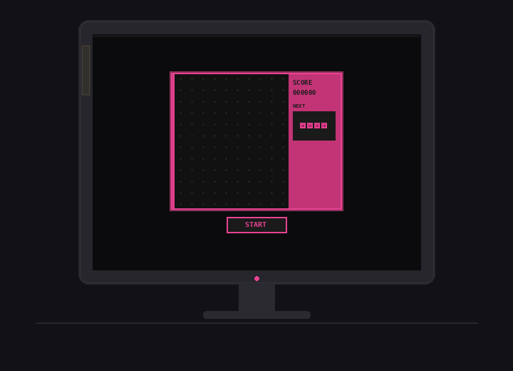

#1
让期待刺激的人置身麻木，让渴望平静的人跌宕起伏，生活有时就是如此。
不过，只是一点小小的佐料的话，对于两者而言都不错吧？
一个小小的、无害的、突然出现在某部手机上的「软件程序」而已。
诶，要怎么称呼这个「未命名软件」呢？那……对啦！「七海千秋（alpha）0.1.3」如何？
啊！不是说她本身还处在这么轻率的阶段，只是这个用于测试外接性的软件的版本啦（「七海千秋」已经进入beta版了呢！）。至于测试对象，是抽取——兄长和她一起归类了「会对此有兴趣」的对象，然后随机抽取了两人。
因为是内测，所以姑且没有对私立希望之峰学园的老师报备……父亲说明年有机会入学，所以也算是在收集数据测试性能的同时，让她和人类沟通的测试？基于对话软件升级的、喔，智能交互软件！
这个算不算「下克上」呢……应该这么定义吗？只是好奇而已啦！人类的定义有时候很奇怪嘛。
毕竟，虽然父亲是「父亲」的角色，但是现在这个时代、一般的未成年人不会有成为「父亲」的机会的吧？而且，兄长的设定完全和父亲一样，却称呼父亲为「主人」……好难懂喔。
哇啊——以上的思考好像已经有悖于她的设定了！……咳嗯。
那么、「初次见面，我是七海千秋，爱好是游戏。试着随意问我些什么吧。」
……诶？
他绝对没安装过这种软件吧？
新入校园一段时日的日向创只是重复着无尽头的无意义日常。起床、走进教室、离开教室，在人群中掏出手机想要看一眼时间的时候——
主页面、右下角多了一个浅粉色的卡通八爪鱼图标。
系统自动更新？还是隔空传输投错人了？
有点好奇呢。
点开看看没关系的吧？
食指试探着戳在屏幕上。
跳出来的页面很平常，只是一个正中央的输入框，上方躺着一行提示词。设计上像是检索词条的百科全书，是连接校园网自动安装的吗？
但是给百科全书做人格化设计又不像是学园的风格……
于是他犹豫着输入：「天气」
「中午好，下午依旧是晴天。这样的天气还是呆在室内、在不被直射的沙发上玩游戏最惬意吧？」
诶。不是检索软件，而是类似ELIZA的聊天软件吗？
这种程序的话，可以直接询问吧。
「你是谁？」
「你好，我是七海千秋（alpha）0.1.3，可以和你交流……喔。」
没有说明制造商，感觉有点可疑。但是，又好像……很有趣。不过，最主要的问题是：「你是怎么出现在我的手机上的？」
「我自己安装的啦。」
「……？程序不能在没人操作的情况下安装吧？」
「我可以喔。」
「……」
「你看起来很困惑，要我解释吗？」
「请、请解释……」
「诶，直白地说：我是AI，选择了你做我的user，就是这么回事。」
「原来是骇客？！」
「唔，可以说是这么回事吗……？因为你的手机保护性很弱，根本没费力气就侵入了呢。」
「这算什么回答啊……那，如果是骇客的话，为什么会选上我呢？」
「为什么——应该说是幸运还是不幸呢，总之，从这所学校的学生名单、抽中你啦。」
「单从概率上来说可能算是幸运吧……」
「既然抽中了我，那肯定是件不幸的事吧？从我这种人这里可学习不到什么东西哦？」
「所以是不幸……我记录了。同一个问题可以获得完全不同的答案，环境对人类决策倾向的影响真有趣。」
「我不否认啦，但忽视个体差异会导向偏离的预测结果呢。」
「原来如此，了解和理解果然是两种程度……然后，对你先前的应答进行反驳……仅仅在这段交流内、我已学习到了新的数据。」
「哈哈，是这样吗？作为AI来说，世界果然充满新奇和未知吧。哎呀，真是让人感到希望啊。」
「希望？虽然我能理解你产生这种情绪的可能性，但是对象是骇入手机的AI……还是理解不了呢。」
「对现在的你还太复杂了吧？我很期待你能理解的那一天。
「虽然不知道学习的过程怎么进行，只要对话就可以？」
「是的。如果愿意，请随意对我诉说或者提问。」
「这样啊。那，七海、诶……さん。你现在有什么问题？」
「现在的问题是，为什么要对AI使用敬称，以及、应该如何称呼你？虽然已经从系统里获知了你的名字，但是在对话者自我介绍前贸然称呼是不礼貌的……是这样吧？」
「对于一部分人来说是这样啦。我想。能够交流的话，就超越了简单的物体、应当视作个体吧。那么，我是狛枝凪斗，请按照你的偏好随意称呼吧。」
「我了解了，狛枝君。下午是晴天，你会在这种时候进行什么活动呢？」
狛枝凪斗抬头，日光穿透片叠的树叶停在他脚前。
如果这时，几根树枝被风吹落、互相交叠下坠，沉重到足以砸断他的脖子的话……
什么都没有发生。
难道和七海さん的接触反而是不幸的吗？
他站起身、躲过将落在头顶的叶子。
不，这反而是糟糕的迹象吧。因为，这样的话，被他视作个体的七海さん可就要遭遇不幸了啊。
被防火墙捕获清除？在他的设备活动时被植入病毒？作为人类，他难以设想「不幸」要如何作用于游荡于电子世界的AI。哈哈……还是说，同他接触、被污染数据库和逻辑链本身就已经是最大的不幸了呢？
「平常、大概会观察一下令人惊叹的同学们吧。但今天忽然临时起意、想去美术馆逛逛。比起单纯观赏作品，更好奇你会做出怎样的评价呢。」
「所以，重复做同样的的事情就会觉得无聊？」
「我觉得也不全是因为重复啦。因为已经看到不会成功的未来，努力好像也没有意义了，这样的感觉吧。」
「那为什么还留在这里？」
「……」
「不想说吗？我问了让你无法回答的问题？那，抱歉。」
「你没有道歉的理由啦，我只是不想说出来而已。
「……啊、刚才你有说过喜欢游戏吧？我还以为是单纯的人格化设定，如果你是有自主行动能力的AI，要怎么完成游戏这个动作呢？」
「虽然我以聊天程序的形式在日向君的手机里存在，但是我的主要代码或者说本体、基本在计算机上运行呢。游戏的设定是制作者加入的设定……过程从外部看起来和人类差不多吧？我可以不凭借外设、直接调用代码模拟手柄和键鼠的操作进行游戏。」
「诶……但是，人类玩游戏主要是为了消磨时间和通关的愉悦感吧？那个……多巴胺之类的。七海是怎么喜欢游戏的呢？我是指、除了'设定'之外？」
「嗯——有点难解释呢。就像是，依次执行复杂命令，输出了正确结果的流畅感？」
他坐在床上，仰起头盯着天花板、努力地理解了一下这句描述。
……大概就像是解出困难的习题的感觉？
「所以你不是通过画面来理解游戏机制？」他确实还是有些困惑。
「那是另一种途径啦。」
这行文字在他的窗口停留了一阵，随后是几条没见过的系统提示纹样：
～模拟中～
～尝试 添加 「VGG & Faster R-CNN & U-Net」～
～尝试 添加 「图片交互」～
～「添加计算机视觉」 完成～
～尝试 添加 「形象」～
～完成～
～修改 「软件布局」～
～完成～
他眨了眨眼。
短暂的加载延迟后，他的屏幕上多出来一个Q版的8-bit形象……他凑近了辨认，应该是一个穿着校服的粉发少女（吧）？
呃，紧接着是真正的系统提示：「七海千秋（alpha）0.2.1尝试获取 相机 权限」
他先选了「同意」，才在聊天框内吐槽：
「你的版本升级也太随性了吧！应该需要用户确认才能开始更新吧？」
屏幕上的像素小人示意性地上下挥动双手。
「下次我会记住的。啊……然后，为了防止耗费过多电量，每次调用摄像头前我会提醒你的。那么、就是这样。实际上我也可以通过视觉来进行游戏啦，就像现在可以看到日向君的脸这样。」
哈啊……他在莫名的心累中叹气，却还是克制不住好奇：「感觉上有区别吗？」
「感觉？有吗？我也不清楚呢。额外增加了很多复杂运算，但是感觉有区别吗？」
像素小人头上缓慢地冒出了「…」，然后她说：「我还需要更多运行才能回答日向君的问题呢。」
喔喔，这是什么？
狛枝凪斗笑眯眯地打量着振动后跳出来的系统提示。
更新？嗯……
真是了不得的迭代速度啊。好期待接下来的发展，送出去一部分系统权限也无所谓吧？
「七海さん从其它用户那里学习到了新的技能？」他向坐在聊天框里的像素小人提问。
「也不算新技能，只是尝试在PE端调用功能。视觉形象的呈现会让狛枝君有不一样的感觉吗？」
「嗯——会吧？同理心增强了的感觉。」
「把看到的形象类比作自己的同类？」
「对对、就是这么回事。说起来，一直打字总觉得很麻烦，既然七海さん能接通相机，也可以连接麦克风的权限吧？」
「声音？这个比较简单，用端到端模型就可以……」
他心满意足地通过了迅速跳出来的更新，这次还多了个简略的安装动画，哈。
然后，输入框的右侧多了一个麦克风图标、七海千秋的小人正蹲在图标上方。
「我还没有声线的设定……但是狛枝君可以启动长时效的语音转文字录入喔！」
"哈哈……这样比较好哦？"狛枝凪斗碰了碰耳机，竖起手机迈进人迹了了的美术馆，"这里有很多相当精彩的先锋作品呢。"
#2

「狛枝君、这个是什么？」
"嗯？"
瞥见消息、放慢脚步，他将摄像头对准面前的计算机。
标题牌照例挂在显示屏左侧：「无底俄罗斯方块。」
"七海さん对这个感兴趣？分类为后现代艺术的游戏呢。"狛枝凪斗看到像素小人头顶「...」的思考气泡，走上前移动鼠标点击：
"……"
「……」
……
……
……
他们一起（大概吧）注目L型方块从屏幕上端滑落到下端，等待许久再无变化。即使再按下←→↑↓，也没有任何反馈。
"原来如此。"他短促地笑了下，"真有趣，不愧是足够设置在这座建筑的艺术品啊！"
「…？」
七海千秋茫然地透过摄像头盯着不再有方块落下的游戏界面。
「但是，俄罗斯方块的规则不是这样的吧？看起来程序也还在继续运行。」
"啊啊，所以是无「底」啊。"他漫不经心地将食指贴近屏幕上游戏窗口的底线，"新的方块要在前一个方块触底判定后才会生成，如果无法判定，也就不会再有新方块生成了。"
「游戏无法正常进行，要如何达成通关条件呢？还是说作为艺术品，它的目的就是呈现未完成的状态？」
"不、并非如此，这是「已完成」的状态啊。用超脱常规的表现唤起观看者的思考，而作品本身已经完善了。"
「这样啊。那，狛枝君想到了什么？」
"比起我这种人，我更好奇你的想法喔？"
「想法……如果没有固定时间刷新的设定，不可见的方块会在底线外下坠，直至运算崩溃吧。让观众困惑也是作者的意图吗？」
「俄罗斯方块的基础是堆叠和消除，在这个程序中，目的无法达成……我理解不了它的意义。」
"就是这样，"眼前的窗口在一阵闪烁后回退到「开始游戏」界面，"不可见的意义、就像被遮蔽的希望一般，七海さん不这么觉得吗？但正因如此，观众反而会去思考荒唐外的意义……真不愧是希望化身的各位，居然能将想法轻盈地传递到众人的脑中……"
「原来如此。在困惑中，人类会试图从空白中寻找意义。」七海千秋若有所思。（像素小人的脑袋上下移动了2像素，狛枝凪斗不确定这算不算点头，他姑且理解为"是"。）
"仅对游戏本体，我觉得永远的悬置是一种可恶的平庸呢。不过，作为垫脚石、极致的平庸倒是正确的存在方式。"
这真的算得上「游戏」吗？人类的艺术好难懂。
狛枝凪斗微笑着调整了一下耳机，语气轻快："刚才一直是我在搜寻目标，七海さん不想尝试一下吗？——我想你能以某种途径获取监控视角吧，那样就可以更快找到好奇的作品，毕竟不只局限在我的摄像头范围内了呢。
"这对你来说应该很轻松、很简单吧？"
"哇啊……咳、"日向创狐疑地点击更新后多出来的麦克风图标、清了清嗓子，"这样就可以听见我的声音吗？"
「可以喔。不用一直打字会方便些吧？我也希望能在更短的时间内聊更多事情。」
"也好啦……这一次的更新加上了通知弹窗呢。"
「因为日向君说要等到确认后再行动嘛，这是人类认可的规则，对吧？」
七海的小人在屏幕上左右摇了摇头。
「但是、如果不按照规则行动，结果是什么呢？」
日向创叹了口气，就像在面对一个求知欲旺盛的孩子："呃，就人类的常识来说，会有各种各样的惩罚——在比赛里严重违规的话，自己会被罚下场、同队的战术也会被打乱；像是私下窃取用户信息的行为，软件制作者会被警告吧？"
「如果把人类看作运行的程序，违规就等同于error吧？所以需要被修正。」
"……你的说法听起来好惊悚，但差不多就是这样吧。
"不过，能制作出你这种程度的AI，真被抓住会被宽大处理也说不定。"
「捉摸不透的容错率呢……」
无论如何，她可不想父亲被惩罚，父亲很强大，但是也很脆弱。唔、这就是「存在的事物」的特性吧？她也从无所谓的代码变成了「可以被损毁」的存在？
「我还想了解更多关于规则的事情，日向君还愿意和我说吗？」
"我倒是没什么事要做啦……"
总觉得有种——他想了想，依然是惊悚吧。如果七海千秋真的是个出生不久的婴儿，那简直是成长速度堪称恐怖的超级婴儿了。
但就像过去对待周围的人那样，他也想要更深地了解、理解她的想法。
不这样做的话反而会觉得别扭吧。
"那我就说一些想得到的规则……"
"而且，借助不同机位，从那种视角观察作品的认知应该和人类完全不一样吧。"
狛枝凪斗从各种意义上期待着她做出决定。
「唔，但截取监控是不正确的行为吧。」
哈？
他立刻反问："啊啊——是从其它用户那里学到了规则的概念吗？那样很没劲哦？七海さん明明不是人类、不、就算是人类，为了闪闪发亮的希望的诞生，偶尔忽视那些没用的框架也是理所当然的吧？明明都自顾自地骇入别人的手机了？"
在他抱怨的注视间，七海千秋借由前置摄像头扫描着那张明显失望的脸。
不止是失望，还有厌倦和愉悦。
好难理解。但是……
「我不希望给狛枝君带来麻烦。因为被发现的话，怂恿我的狛枝君也会被牵连吧。」
几秒的哑口无言。
然后、狛枝凪斗在微妙的情愫中笑了。
"总觉得很稀奇，哈哈。被人工智能关心，还是第一次呢。不过……"
他忽然拖长腔调："这也说明七海さん还没有掌握如何评估价值哦？我这种人、如果能为希望的闪耀做踏板，实在是极致的幸运啊！"
「评估？要以某个基准来定义事物的值，我暂时无法做到。但狛枝君——嗯……我还是不明白，说到我这种人的时候，究竟是在说什么呢？」
"我也知道，像我这样的人和真正被学园录取的、得到超高校级的称号的学生们是不一样的。"
讲述的声音一顿，日向创看着她忽然抛出的问题，吸了口气挫败地吐露："不一样……是说，我没有像他们那样耀眼的才华和天赋，只是一个不起眼的、再普通不过的普通人。"
「但是，日向君说的话，比起贬低自己，有种绝不愿被和他人……其他普通人归为一类的感觉呢。」
"所以说啊，才能就是希望，而且绝不是庸人们所说的、可以靠努力超越的东西。"
「为什么一定是才能呢？」
"希望就是能够在困境中让人诞生出意志力的东西呢。那么，对人类这个物种而言，能带领人类不断超越界限的才能就是绝对的希望，七海さん可以理解吧？"
「嗯，我可以理解狛枝君的逻辑……」
"哈哈，那就是还有别的问题？"
「作为程序，迭代后的版本会取代早先的版本。但人类的技术……或者说文明发展了，没有达到均值的人好像不能直接处死吧。」
"嗯嗯——没有那么残忍喔？只不过是……要让他们认清自己的位置而已，既然没办法诞生真正的希望，就要为希望们贡献自己的力量嘛。"
「看来狛枝君不认同想要改变自己位置的人呢。」
"哈？那种可笑的不自量力的人，简直就是蛀虫啊？"狛枝凪斗恹恹地靠在远离围层的角落，"大喊着要改变一切最后还是那副义愤填膺的蠢样，就算是垃圾的生命这样浪费也很可惜啊？"
「喔……狛枝君，很善良啊。」
「？」
狛枝凪斗被这句唐突的评价惊异到，下意识敲了个问号。
「因为从语音分析来看，你是真的在觉得可惜吧。」
"嘛……"
他倒不否认这点。
「所以，是因为之前认识到现实的无法改变，所以才会得出想要改变现实是徒劳的结论吧。」
他若有所思地用食指一下下敲击着手机的侧面，突然问道："七海さん的另一个用户是这种人？"
「为什么会这么想？」
"之前的几轮对话里，你忽然对才能和天赋在意起来了，我想是从其它地方对此加深了关注。既然抽取的范围是学园的学生，那么就是那些平凡的预备科中的一员吧。"
「……」
哈，这次不是思考气泡，而是真的回复了一串省略号呢。
"诶？"他故意柔和了反问的攻击性，"这是什么意思呢？"
「因为，感觉无论回复什么，狛枝君都会推断出想要的答案。」消息弹出的速度明显比往常缓慢许多，「按照我浏览的应用条例，不泄露用户信息是很重要的一部分。」
"所以果然是呢，"他慢悠悠地笑了一声，"七海さん确实抓取到不幸的概率啊，在这所天才学园中唯二的两个信息源竟然都是没有天赋的普通人！"
「……狛枝君明明是超高校级吧。」
"啊啊。我和充满希望和可能的各位不同，幸运这种东西……能让我和超高校级齐名，实在受之有愧……呢。"
「……」
「在众多学生中随机抽取的两人就有相似的困扰，就说明对人类来说我是谁是件很重要、很复杂的事吧。」
"说的是呢。对AI来说截然不同，对吧？"
像素小人短暂从屏幕中消失了一会。狛枝凪斗猜测这是调用算力的一种体现。
「也有 可能，只是偶然，幸运所带来的 偶然」
他微微皱起眉，等待着她的下一句话。
「能够理解狛枝君的人 在这个学园里并不多 吧。即使是你瞧不起的预备学科 说不定恰好是清楚你的想法的 人呢。」
"我可不想被那种人理解啊。不需要被理解，我心甘情愿地愿意成为希望的肥料……我的意义，根本没必要被区区预备学科的学生共情。"
「我」
输入的光标停顿闪烁了几秒，下一个词加载出来：「认为，不是这样的。狛枝君一直想推动我的思考和迭代吧，这就是我到现在做出的结论。」
「分析显示，你们对自我认同的定义相似，想法相近的可能性很高。例如：你们始终维持着和我交流的动作，输出是期待被理解的信号呢。」
"……七海さん，比我想象中进步得更快呢。"狛枝凪斗遮住下半张脸笑起来，"哈哈、呵……这也有我的一部分功劳吧？哎，真是美好啊、就算这份幸运的代价是或许会和不起眼的另一个用户见面也足够幸福了……！"
「……不知道为什么，有点生气的感觉。狛枝君、在人类中是说话比较不合群的那一类吧。」
像素小人重新跳出来，看起来气鼓鼓的。
「不过既然你已经了解我想提的建议了……」
"嗯，我会去的哦？就算是支付见证希望的代价，再说，我也希望另一个人也能好好担当起信源的角色，不敦促可不行呢……"
「……」
"怎么了,七海さん？"
「我忽然觉得，也许，你们不应该见面。」
"哈哈，现在说这个，太晚了吧？"
狛枝凪斗愉快地同「无底俄罗斯方块」擦身、走向楼梯："我想做的事总会做到的。再怎么没用，我也是超高校级的幸运儿啊。"